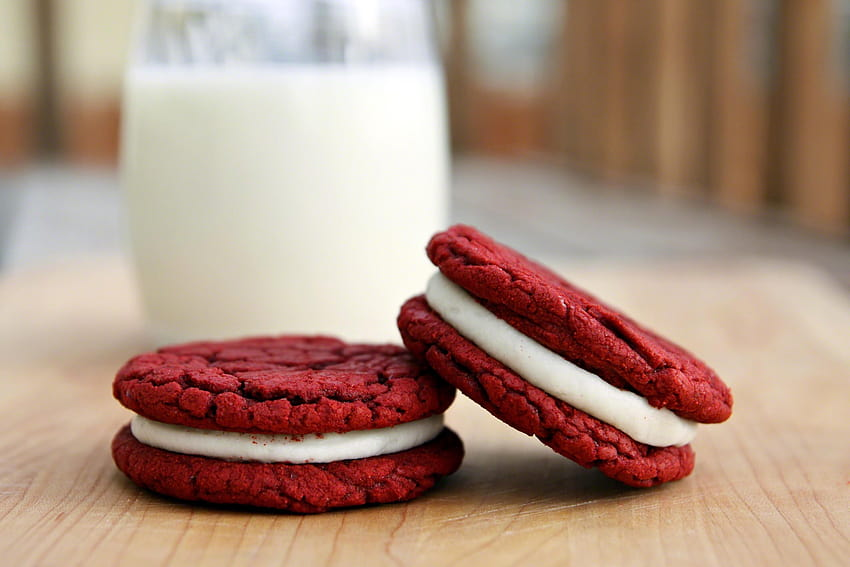

-

Red Velvet Cookies
Ingredients
- Unsweetened Chocolate - 2 squares
- Unsalted Butter - ½ stick
- Brown Sugar - 2/3 cup
- White Sugar - 1/3 cup
- Egg - 1
- Red Food Coloring - 1 teaspoon
- Cream Cheese - 4 teaspoons
- Flour - 2 cups
- Baking Soda - ½ teaspoon
- Salt - ½ teaspoon
- Sour Cream / Vanilla Yoghurt - 3/4 cup
- Semi-sweet Chocolate Chips - 1 cup
- Sugar - 2 cups
- Vanilla - ½ teaspoon
- Unsalted Butter - 1/4 cup, soft.
Method of Preparation
Melt chocolate for 90 seconds and cool. In a bowl, ad butter, brown sugar, white sugar and mix. Add egg and mix. Add red food coloring and mix
In a sieve, sift flout, baking soda and salt. Pour in the half of the flour and mix. Add the sour cream or yoghurt and mix well, then add the remaining flour. Add te semi-sweet chocolate chips and mix. Shape into a ball and bake for 9 minutes.
In another bowl, mix butter, cream cheese and vanilla extract. Slowly add in sugar and mix. Place on one cookie and top with another.